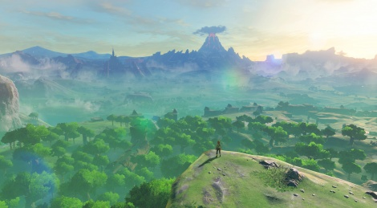
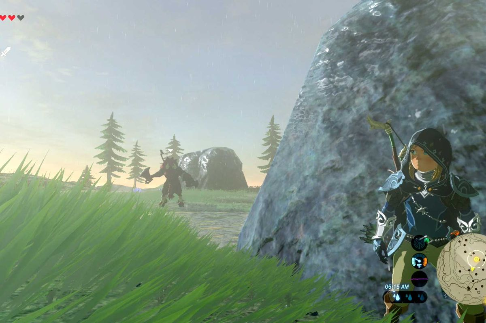
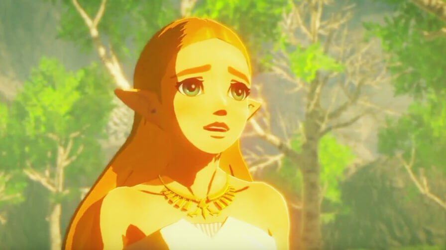
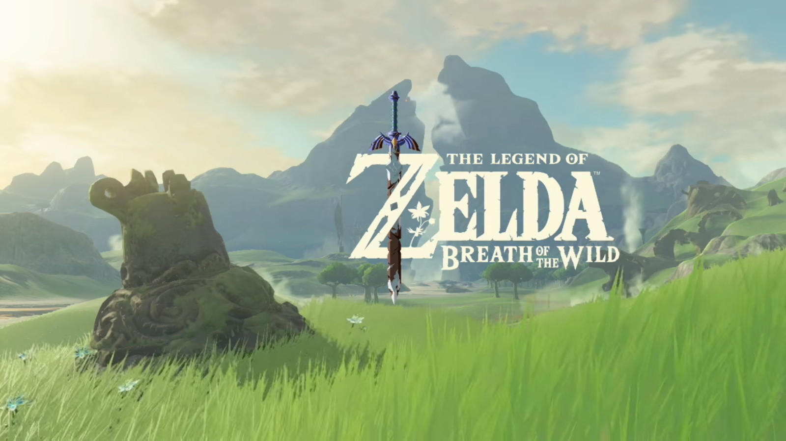

Breath of the wild is the best game ever, it is Fallout meets Minecraft meets the iconic Zelda franchise and the result of this baby is a masterpiece of no comparison. Many features that are precious to games are seen in their ideal forms such as exploration, player choice and non-restrictive narrative. The game is easy to learn and impossible to master, with much depth and many secrets in the game to be discovered. It balances between accessibility and difficulty well by having some optional challenges and a fairly well-rounded main campaign. The story immersive but builds upon the Zelda lore already present in the series, creating a nostalgic feeling to the music, landscape and character designs.
Korok seeds are an example of secrets you can find in the game, and there are so many of them (900!!!) that its almost impossible to find all of them without help from an online guide. They are rewards for the player looking in every possible corner of the map, and messing with every individual thing. It makes the game exciting during the slower moments and helps make you feel accomplished for exploring.
While the game is easy to complete without much direction, many of the optional puzzles and shines are very difficult and require outside of the box thinking. Additionally, there are a few extremely difficult enemies such as the Lynel that are almost impossible to defeat without much knowledge and skill of the game, however they can usually be avoided through stealth. These varying degrees of difficulty make for a good time for everyone.
The immersive story shouldn’t be spoiled so there is not much to say here. The story is mostly revealed though cutscenes after boss battles and discovering memory spots in the world. It is a classic Zelda story of heroics and fate meeting together and is something to experience for yourself.
To conclude, Legend of Zelda: Breath of the Wild is the best game ever since discovery and exploration are well-rewarded with secrets to be discovered in game, the game is easy yet difficult when you want it to be and the story is immersive without disrupting gameplay. It is obvious to see that this game is an absolute masterpiece.